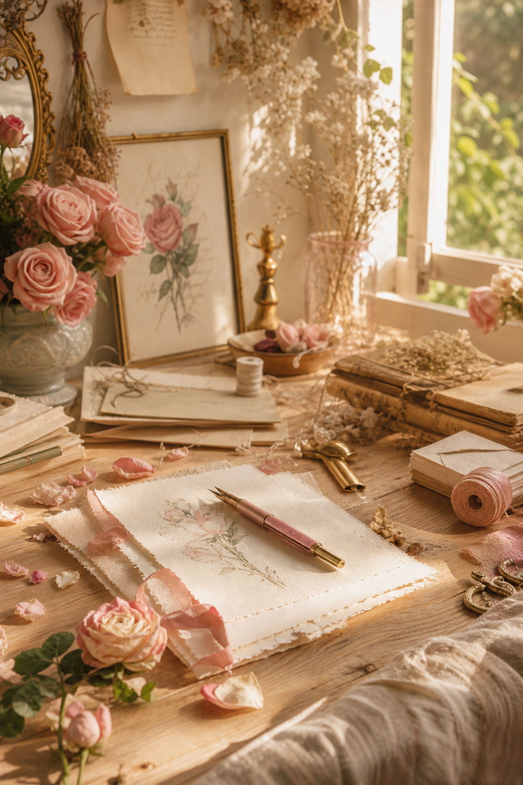
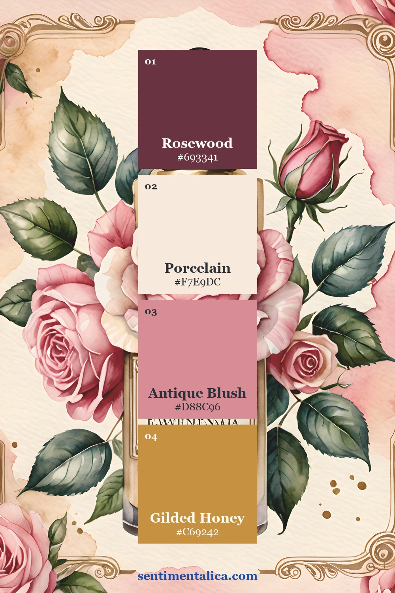
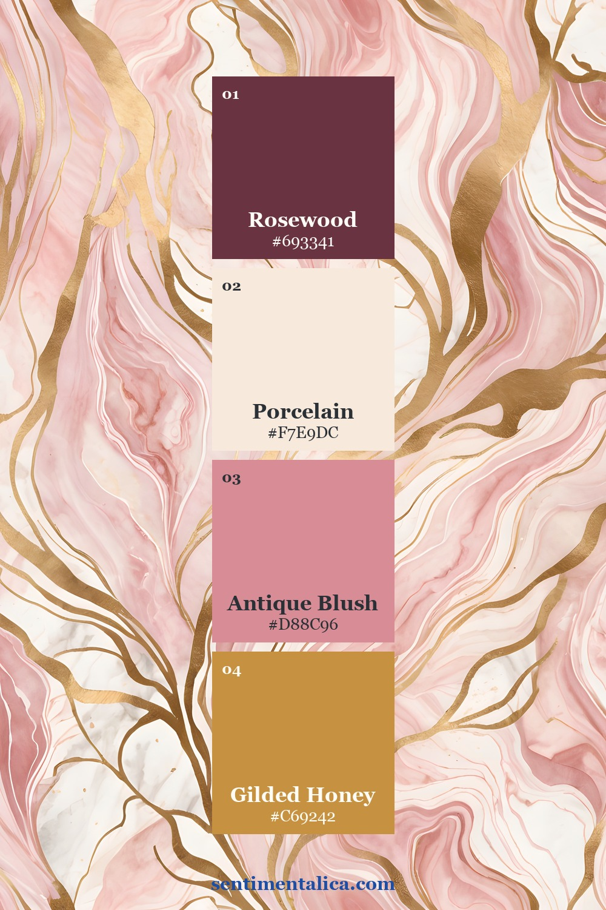
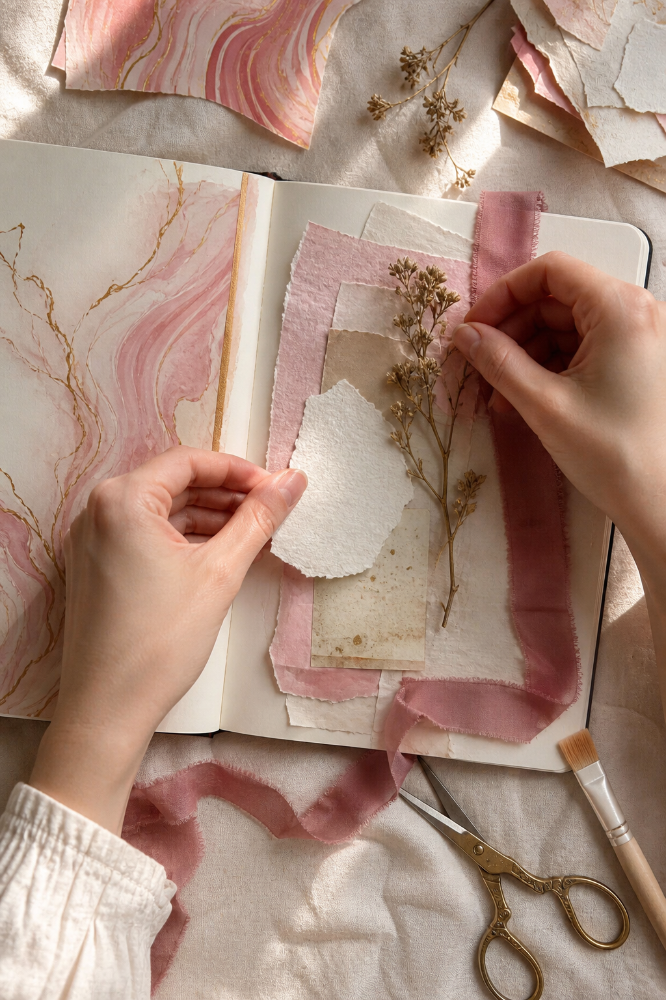
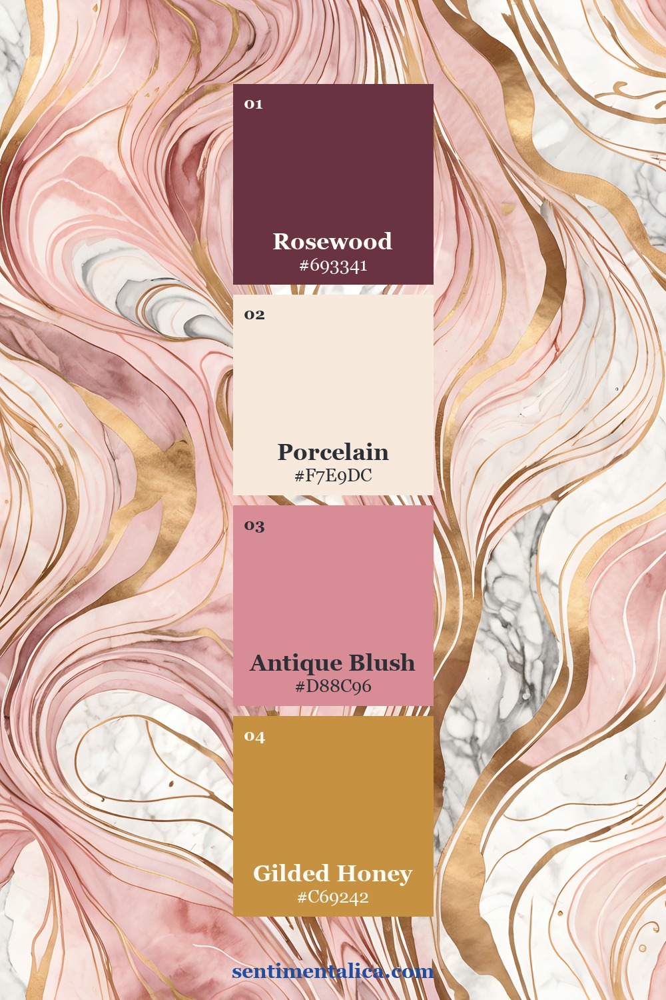
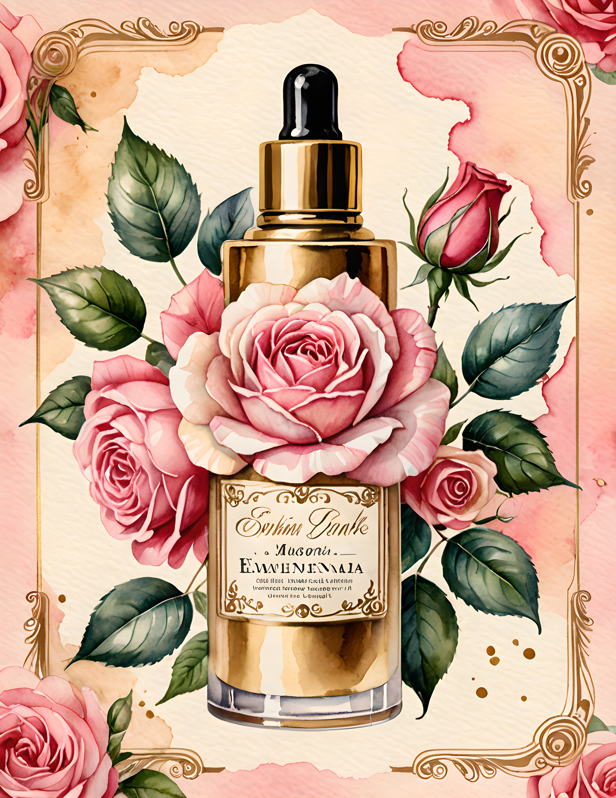
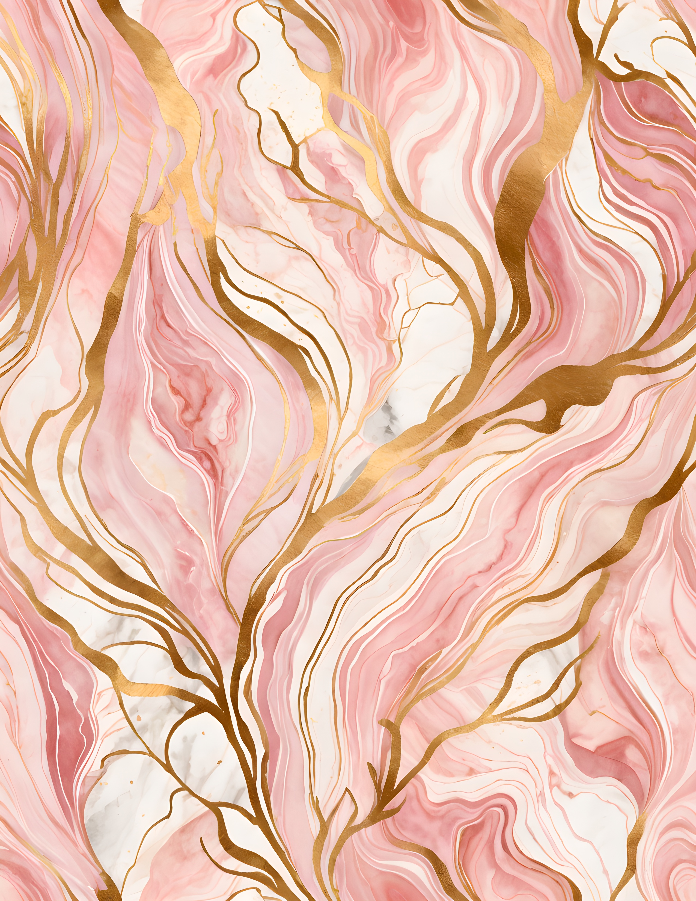
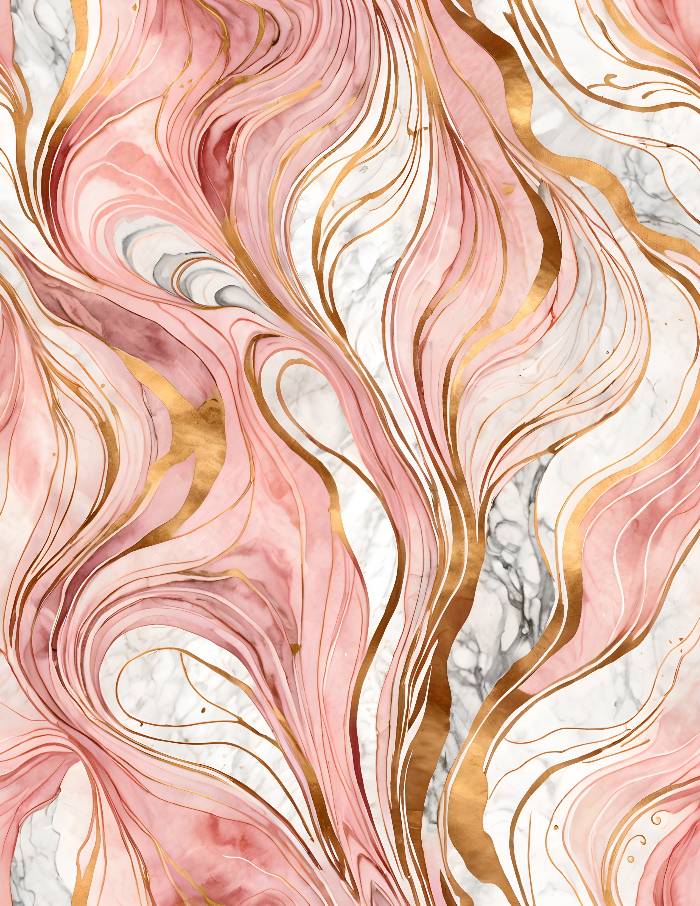

Blush and gold can feel refined without becoming formal. The key is to give the metallic color a supporting role and let warm porcelain paper hold the page together. Add one deeper rosewood note, and the palette gains enough contrast for photographs, handwriting, and delicate floral imagery.

The Gilded Blush palette
Rosewood is the dark anchor, Porcelain is the light neutral, Antique Blush is the middle color, and Gilded Honey is the accent. A reliable proportion is fifty percent porcelain, twenty-five percent blush, fifteen percent rosewood, and no more than ten percent gold.

Make gold behave like a highlight
Gold is most persuasive in small, repeated touches: a clip, a ruled edge, and one tiny fleck. Avoid placing broad metallic paper beneath every layer. The eye reads gold as light, so concentrate it near the focal point and leave the rest matte.

Use blush in more than one texture
Repeat Antique Blush as paper, ribbon, or a faint wash rather than three identical printed pieces. The color will connect the page while the different surfaces keep it handmade. Add rosewood as a narrow strip under the focal card or as one dark flower center.

Protect the quiet center
Elegant pages need restraint more than symmetry. Reserve a generous porcelain area for a note, quotation, or photograph. If a floral image is ornate, crop it once and place it decisively instead of surrounding it with several smaller ornaments.

See the palette across the collection



A polished five-layer formula
Layer a porcelain base, a blush torn edge, a rosewood shadow, one botanical sprig, and a gilded fastener. Write with brown-black ink rather than pure black. The slightly softer contrast belongs naturally beside antique gold and warm paper.
The Gilded Blush commercial-use watercolor image pack offers coordinated statement papers and decorative imagery for elegant journal projects. Use one page as the visual lead, then repeat its colors with materials already in your stash.
Image note: Atmospheric and process visuals in this article were created with AI and curated by Sentimentalica. The displayed collection pages are authentic listing artwork.